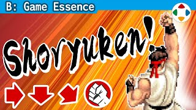
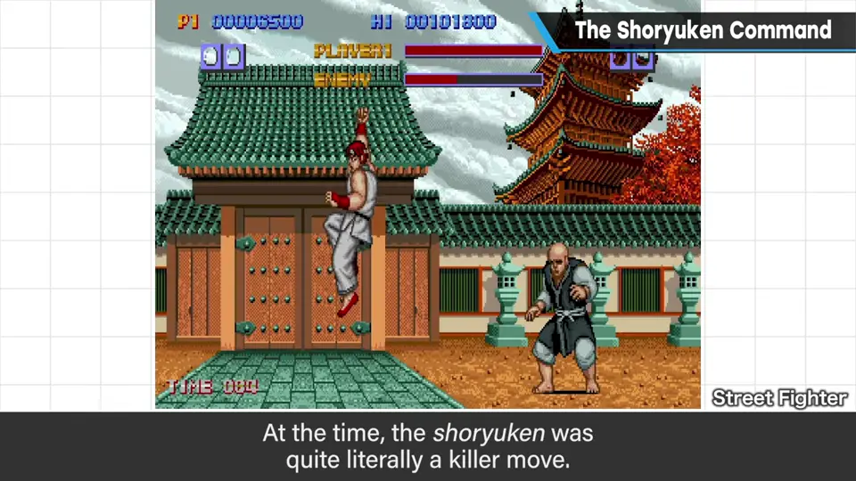
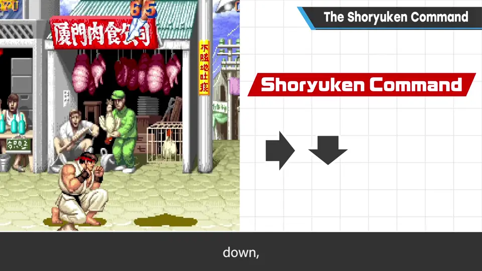
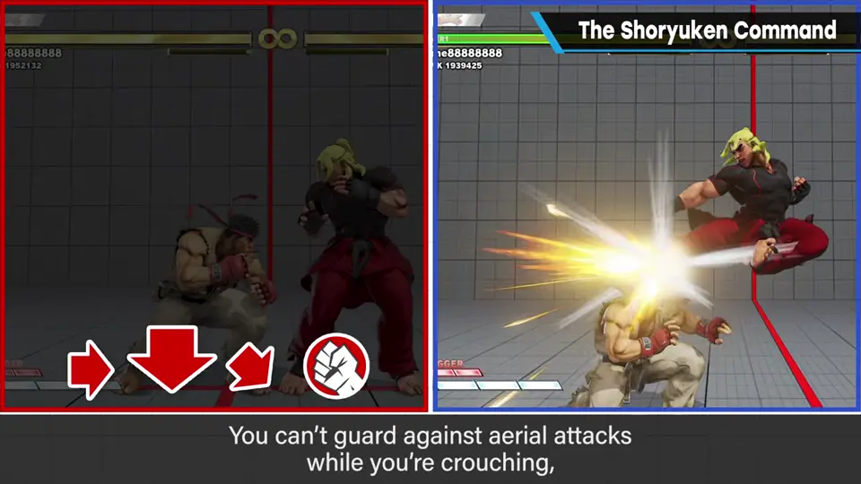
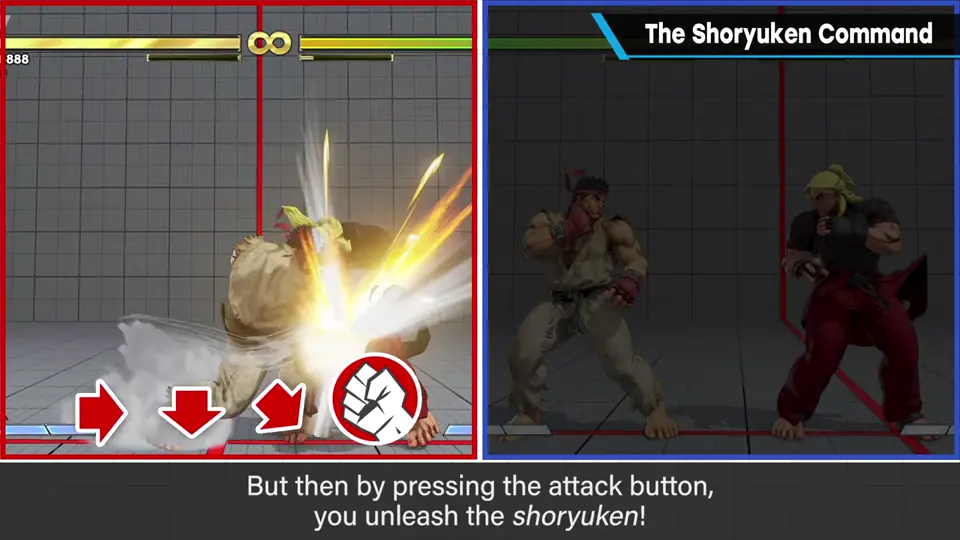
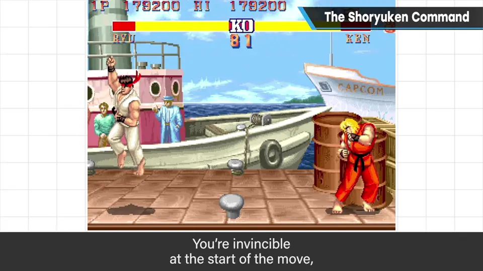
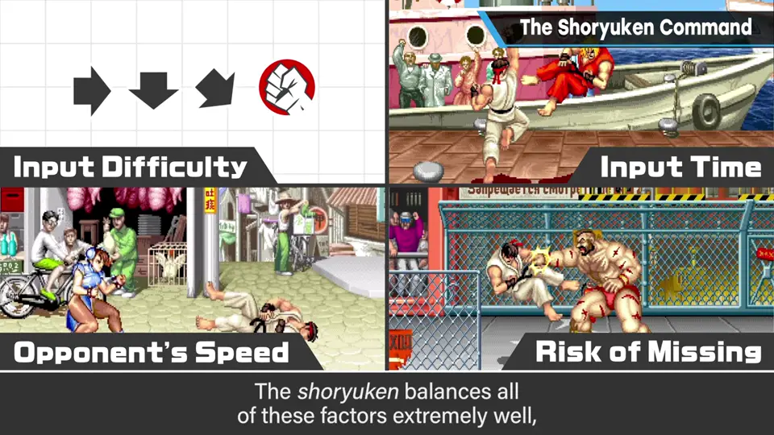
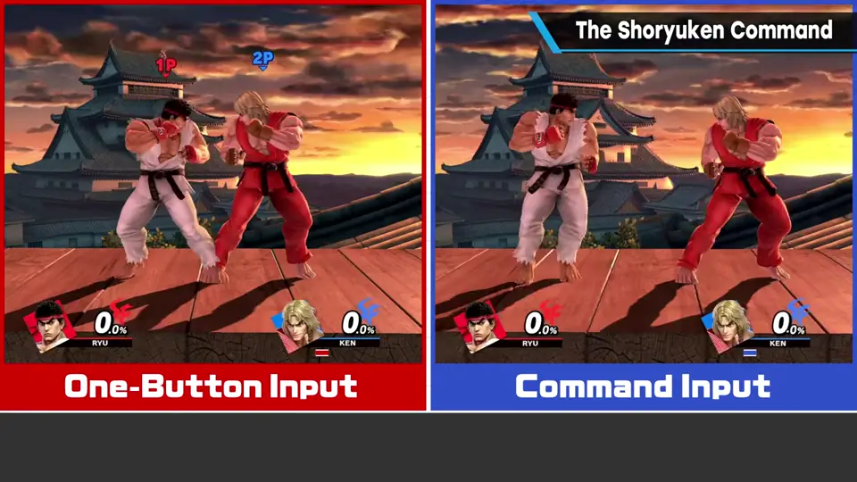
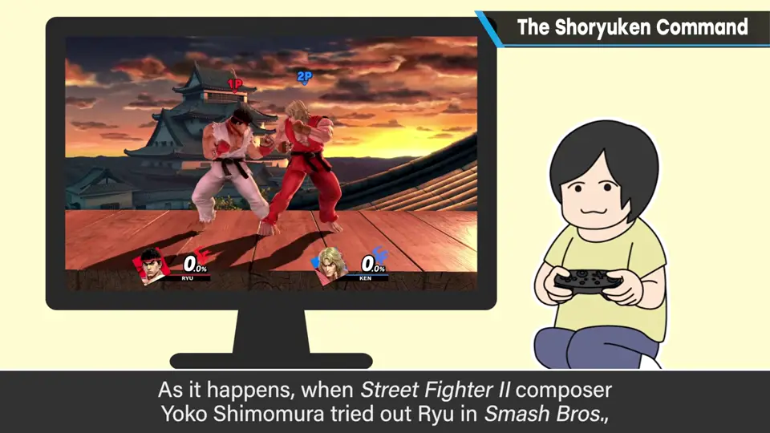

速览
升龙拳是游戏界最著名的必杀技之一。最早实装于初代《街头霸王》（1987，街机），当时真是「必杀」——打中两三下对手就倒，但极难搓出。让升龙拳指令成为主流的是《街头霸王 II》：初玩时樱井惊讶于波动拳和升龙拳这么好出，也惊讶于威力之弱。升龙拳指令：摇杆前→下→斜前下＋攻击键，在很多 2D 格斗游戏中会放出上升的对空技。从风险回报看它好得「过分」：① 先输入前——街霸系列向后是防御，所以这是危险地靠近对手；② 再输入下——蹲着无法防御空中攻击；③ 再输入斜前下——前进与下蹲的混合，哪里都防不住，蹲防虽能防下段也不能立即切换。也就是摇杆姿势上的最大危机，这时按键——唰地放出对空技。《街霸 II》中规格的细腻也加深了博弈：升龙拳的根部判定强，出招瞬间无敌、能弹开各种攻击，意味着越吸引对手越有利；离对手越近越容易被反击，越近也越有逆转机会。指令难度、完成指令所需时间、对手跳跃和攻击速度、落空时的危险程度等平衡得极好，产生了巨大的博弈。轻中重按键改变上升高度和强度，樱井认为重可以更强一些：风险大的技回报也应大。《大乱斗》里的隆、肯、特瑞、一八也接受升龙拳指令：隆一键就能出升龙拳，但用指令输入时威力和无敌时间更优待。考虑游戏性本该让指令更强，但如果让平衡依赖指令、拉大会与不会的人的差距，对多数人就太难了——这是兼顾休闲性的平衡。《街霸 II》作曲家下村阳子摸了《大乱斗》的隆后很高兴「我也能出升龙拳了」（当然是一键版）。同样的指令，不同游戏目的不同，要思考其意义再设定。
1. 升龙拳的来历 0:04
升龙拳是游戏业界最著名的必杀技之一（同样有名的还有波动拳）。最早在初代《街头霸王》（1987 年，街机）中实装，当时真是字面意义的「必杀」：打中两三下对手就会倒下——但出奇地难搓出来。

让升龙拳指令成为主流的是《街头霸王 II》。虽然当时也要练习，但樱井初次玩时惊讶于波动拳和升龙拳这么好出，也惊讶于它们的威力之弱。
2. 输入过程 = 风险递增 1:02
升龙拳指令：摇杆依次输入 前 → 下 → 斜前下，再按攻击键。很多 2D 格斗游戏中会放出上升的对空技。樱井认为它在风险回报上做得极好，好得「过分」：
| 输入 | 状态 | 风险 |
|---|---|---|
| ① 前 | 街霸系列中向后才是防御 | 危险地靠近对手 |
| ② 下 | 蹲下 | 无法防御空中攻击（对空中攻击无防御） |
| ③ 斜前下 | 前进与下蹲的混合 | 哪里都防不住；也不能马上切换到蹲防 |
| ＋按键 | 最大危机的时刻 | 唰——对空技升龙拳飞出 |



3. 《街霸 II》规格的细腻 2:20
- 升龙拳根部判定强，且出招瞬间无敌，能弹开各种攻击——表示越把对手吸引过来越有利。
- 离对手近就容易被反击；越近，逆转的机会越大——非常符合风险与回报。
- 指令的适度难度、完成指令的预计时间、对手跳跃和攻击的速度、落空时的危险程度——各项平衡感极好，产生了巨大的博弈。


轻、中、重按键会改变上升高度和强度；樱井觉得「重」可以更猛一些：风险大的技，回报也应大。
4. 《大乱斗》里的升龙拳 3:36
《大乱斗》中的隆、肯（严格说还有特瑞和一八）也接受升龙拳指令。例如隆一个按键就能出升龙拳，但用指令输入时，威力和无敌时间更优待。


从游戏性考虑，本应让指令更强；但若做成离不开指令的平衡、拉大会与不会指令的人之间的差距，对多数人来说就太难了——这是兼顾休闲性后的平衡。
实际上，作曲家下村阳子摸了《大乱斗》的隆后，很高兴地说「我也能出升龙拳了」（当然是一键、无指令版）。
自测题
1. 升龙拳指令的输入过程为什么本身就是风险？
前 = 靠近对手（向后才是防御）；下 = 无法防空；斜前下 = 哪里都防不住、也无法立刻蹲防——摇杆姿势上是最大危机，按键时才放出对空技。 1:12
2. 升龙拳哪些规格让「越吸引对手越有利」？
根部判定强、出招瞬间无敌能弹开各种攻击；离对手越近越易被反击，但逆转机会也越大。 2:30
3. 《大乱斗》为什么不让指令版升龙拳强得多？
若平衡离不开指令，会拉大会与不会的人的差距，对多数人太难；所以兼顾休闲性，只给指令版威力和无敌时间上的优待。 3:48